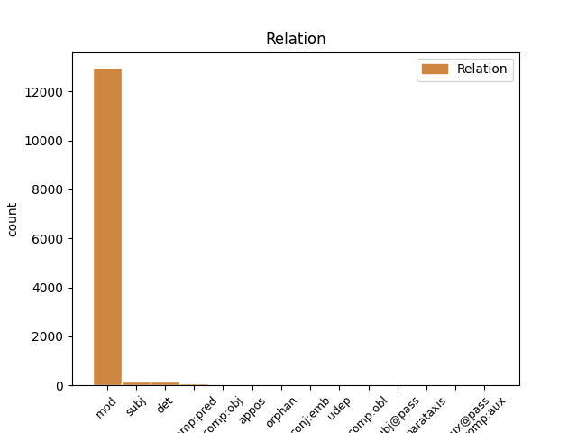
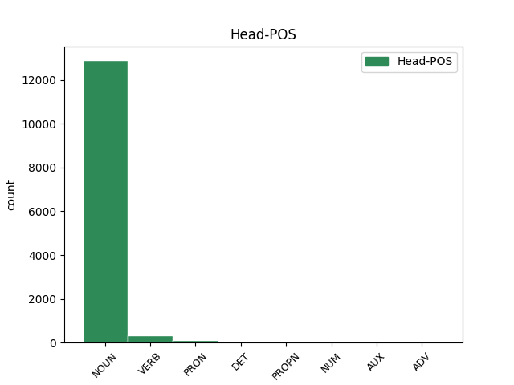
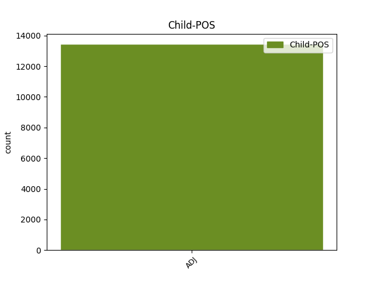

Distribution of features within this leaf



Agreement Rules sorted by frequency.
- When the dependent token is the modifer(mod) of the head token, and the head token is NOUN and the dependent token is ADJ.
1 Strok _ _ _ _ 0 _ _ _
2 Lærarafelagið _ _ _ _ 0 _ _ _
3 Skúlablaðið _ _ _ _ 0 _ _ _
4 Bókadeildin _ _ _ _ 0 _ _ _
5 Bókaklubbin _ _ _ _ 0 _ _ _
6 Bókamiðsølan _ _ _ _ 0 _ _ _
7 Í _ _ _ _ 0 _ _ _
8 eini _ _ _ _ 0 _ _ _
9 uppgerð uppgerð ADJ _ Case=Acc|Degree=Pos|Gender=Neut|Number=Sing|Strength=Strong 10 mod _ _
10 yvir yvir NOUN _ Case=Acc|Gender=Neut|Number=Sing 0 _ _ _
11 læntar _ _ _ _ 0 _ _ _
12 bøkur _ _ _ _ 0 _ _ _
13 á _ _ _ _ 0 _ _ _
14 skúlabókasavninum _ _ _ _ 0 _ _ _
15 í _ _ _ _ 0 _ _ _
16 Eysturskúlanum _ _ _ _ 0 _ _ _
17 herfyri _ _ _ _ 0 _ _ _
18 , _ _ _ _ 0 _ _ _
19 vísti _ _ _ _ 0 _ _ _
20 tað _ _ _ _ 0 _ _ _
21 seg _ _ _ _ 0 _ _ _
22 , _ _ _ _ 0 _ _ _
23 at _ _ _ _ 0 _ _ _
24 helmurin _ _ _ _ 0 _ _ _
25 av _ _ _ _ 0 _ _ _
26 bókunum _ _ _ _ 0 _ _ _
27 , _ _ _ _ 0 _ _ _
28 sum _ _ _ _ 0 _ _ _
29 vórðu _ _ _ _ 0 _ _ _
30 læntar _ _ _ _ 0 _ _ _
31 út _ _ _ _ 0 _ _ _
32 ein _ _ _ _ 0 _ _ _
33 dag _ _ _ _ 0 _ _ _
34 , _ _ _ _ 0 _ _ _
35 vóru _ _ _ _ 0 _ _ _
36 krabbabøkur _ _ _ _ 0 _ _ _
37 . _ _ _ _ 0 _ _ _
1 Eg _ _ _ _ 0 _ _ _
2 eri _ _ _ _ 0 _ _ _
3 37 _ _ _ _ 0 _ _ _
4 ár _ _ _ _ 0 _ _ _
5 og _ _ _ _ 0 _ _ _
6 elsti _ _ _ _ 0 _ _ _
7 pakkarin _ _ _ _ 0 _ _ _
8 umborð _ _ _ _ 0 _ _ _
9 , _ _ _ _ 0 _ _ _
10 so _ _ _ _ 0 _ _ _
11 sum sums ADJ _ Case=Nom|Gender=Fem|Number=Sing 12 det _ _
12 heild heild NOUN _ Case=Nom|Gender=Fem|Number=Sing 0 _ _ _
13 er _ _ _ _ 0 _ _ _
14 talan _ _ _ _ 0 _ _ _
15 um _ _ _ _ 0 _ _ _
16 ungt _ _ _ _ 0 _ _ _
17 fólk _ _ _ _ 0 _ _ _
18 . _ _ _ _ 0 _ _ _
1 Og _ _ _ _ 0 _ _ _
2 Adina _ _ _ _ 0 _ _ _
3 er _ _ _ _ 0 _ _ _
4 millum _ _ _ _ 0 _ _ _
5 teirra _ _ _ _ 0 _ _ _
6 , _ _ _ _ 0 _ _ _
7 sum sums ADJ _ Case=Nom|Gender=Neut|Number=Sing 9 subj _ _
8 hava _ _ _ _ 0 _ _ _
9 hitað hita VERB _ Aspect=Perf|Case=Nom|Gender=Neut|Number=Sing|Strength=Strong|Tense=Past|VerbForm=Part|Voice=Pass 0 _ _ _
10 upp _ _ _ _ 0 _ _ _
11 , _ _ _ _ 0 _ _ _
12 nú _ _ _ _ 0 _ _ _
13 liðini _ _ _ _ 0 _ _ _
14 fyrireika _ _ _ _ 0 _ _ _
15 seg _ _ _ _ 0 _ _ _
16 til _ _ _ _ 0 _ _ _
17 hálvfinalu _ _ _ _ 0 _ _ _
18 á _ _ _ _ 0 _ _ _
19 Hálsi _ _ _ _ 0 _ _ _
20 í _ _ _ _ 0 _ _ _
21 Havn _ _ _ _ 0 _ _ _
22 . _ _ _ _ 0 _ _ _
1 Vit _ _ _ _ 0 _ _ _
2 kunnu _ _ _ _ 0 _ _ _
3 staðfesta _ _ _ _ 0 _ _ _
4 , _ _ _ _ 0 _ _ _
5 at _ _ _ _ 0 _ _ _
6 uppskotið _ _ _ _ 0 _ _ _
7 tíverri _ _ _ _ 0 _ _ _
8 ikki _ _ _ _ 0 _ _ _
9 hevur _ _ _ _ 0 _ _ _
10 fingið _ _ _ _ 0 _ _ _
11 nakra _ _ _ _ 0 _ _ _
12 veruliga veruligs ADJ _ Case=Acc|Degree=Pos|Gender=Neut|Number=Sing|Strength=Strong 13 mod _ _
13 viðgerð viðgerð VERB _ Aspect=Perf|Case=Nom|Gender=Neut|Number=Sing|Strength=Strong|Tense=Past|VerbForm=Part|Voice=Pass 0 _ _ _
14 í _ _ _ _ 0 _ _ _
15 mun _ _ _ _ 0 _ _ _
16 til _ _ _ _ 0 _ _ _
17 , _ _ _ _ 0 _ _ _
18 hvørt _ _ _ _ 0 _ _ _
19 verandi _ _ _ _ 0 _ _ _
20 semingsstovnur _ _ _ _ 0 _ _ _
21 hevur _ _ _ _ 0 _ _ _
22 ta _ _ _ _ 0 _ _ _
23 neyðugu _ _ _ _ 0 _ _ _
24 orkuna _ _ _ _ 0 _ _ _
25 til _ _ _ _ 0 _ _ _
26 eisini _ _ _ _ 0 _ _ _
27 at _ _ _ _ 0 _ _ _
28 taka _ _ _ _ 0 _ _ _
29 sær _ _ _ _ 0 _ _ _
30 av _ _ _ _ 0 _ _ _
31 almenna _ _ _ _ 0 _ _ _
32 arbeiðsmarknaðinum _ _ _ _ 0 _ _ _
33 . _ _ _ _ 0 _ _ _
1 Ein _ _ _ _ 0 _ _ _
2 løta løta ADJ _ Case=Nom|Degree=Pos|Gender=Masc|Number=Sing|Strength=Weak 3 mod _ _
3 sum sum PRON _ Case=Nom|Gender=Masc|Number=Sing 0 _ _ _
4 var _ _ _ _ 0 _ _ _
5 Og _ _ _ _ 0 _ _ _
6 hann _ _ _ _ 0 _ _ _
7 hevur _ _ _ _ 0 _ _ _
8 svarað _ _ _ _ 0 _ _ _
9 mær _ _ _ _ 0 _ _ _
10 : _ _ _ _ 0 _ _ _
11 " _ _ _ _ 0 _ _ _
12 Náði _ _ _ _ 0 _ _ _
13 mín _ _ _ _ 0 _ _ _
14 er _ _ _ _ 0 _ _ _
15 tær _ _ _ _ 0 _ _ _
16 nóg _ _ _ _ 0 _ _ _
17 mikið _ _ _ _ 0 _ _ _
18 ; _ _ _ _ 0 _ _ _
19 tí _ _ _ _ 0 _ _ _
20 at _ _ _ _ 0 _ _ _
21 mátturin _ _ _ _ 0 _ _ _
22 verður _ _ _ _ 0 _ _ _
23 fullkomin _ _ _ _ 0 _ _ _
24 í _ _ _ _ 0 _ _ _
25 máttloysi _ _ _ _ 0 _ _ _
26 . _ _ _ _ 0 _ _ _
27 " _ _ _ _ 0 _ _ _
1 Um _ _ _ _ 0 _ _ _
2 tað _ _ _ _ 0 _ _ _
3 veruliga _ _ _ _ 0 _ _ _
4 virðið _ _ _ _ 0 _ _ _
5 av _ _ _ _ 0 _ _ _
6 einari _ _ _ _ 0 _ _ _
7 vøru _ _ _ _ 0 _ _ _
8 ikki _ _ _ _ 0 _ _ _
9 kann _ _ _ _ 0 _ _ _
10 ásetast ásetast VERB _ Aspect=Perf|Case=Nom|Gender=Neut|Number=Sing|Strength=Strong|Tense=Past|VerbForm=Part|Voice=Pass 0 _ _ _
11 sambært sambært ADJ _ Definite=Ind|Gender=Neut|Number=Sing|VerbForm=Part 10 comp:pred _ _
12 reglunum _ _ _ _ 0 _ _ _
13 omanfyri _ _ _ _ 0 _ _ _
14 , _ _ _ _ 0 _ _ _
15 verður _ _ _ _ 0 _ _ _
16 virðið _ _ _ _ 0 _ _ _
17 ásett _ _ _ _ 0 _ _ _
18 av _ _ _ _ 0 _ _ _
19 tollmyndugleikunum _ _ _ _ 0 _ _ _
20 í _ _ _ _ 0 _ _ _
21 samsvari _ _ _ _ 0 _ _ _
22 við _ _ _ _ 0 _ _ _
23 GATT _ _ _ _ 0 _ _ _
24 - _ _ _ _ 0 _ _ _
25 reglurnar _ _ _ _ 0 _ _ _
26 annars _ _ _ _ 0 _ _ _
27 . _ _ _ _ 0 _ _ _
1 Hon _ _ _ _ 0 _ _ _
2 var _ _ _ _ 0 _ _ _
3 eisini _ _ _ _ 0 _ _ _
4 sannførd _ _ _ _ 0 _ _ _
5 um _ _ _ _ 0 _ _ _
6 , _ _ _ _ 0 _ _ _
7 at _ _ _ _ 0 _ _ _
8 hóast _ _ _ _ 0 _ _ _
9 tað _ _ _ _ 0 _ _ _
10 mangan _ _ _ _ 0 _ _ _
11 breyt _ _ _ _ 0 _ _ _
12 í _ _ _ _ 0 _ _ _
13 bæði _ _ _ _ 0 _ _ _
14 borð _ _ _ _ 0 _ _ _
15 á _ _ _ _ 0 _ _ _
16 lívsleið _ _ _ _ 0 _ _ _
17 hennara _ _ _ _ 0 _ _ _
18 , _ _ _ _ 0 _ _ _
19 vildi _ _ _ _ 0 _ _ _
20 Harrin _ _ _ _ 0 _ _ _
21 sjálvur _ _ _ _ 0 _ _ _
22 stríðast _ _ _ _ 0 _ _ _
23 fyri _ _ _ _ 0 _ _ _
24 hesum _ _ _ _ 0 _ _ _
25 verki _ _ _ _ 0 _ _ _
26 og _ _ _ _ 0 _ _ _
27 veita _ _ _ _ 0 _ _ _
28 henni _ _ _ _ 0 _ _ _
29 styrki _ _ _ _ 0 _ _ _
30 at _ _ _ _ 0 _ _ _
31 fullføra _ _ _ _ 0 _ _ _
32 tað _ _ _ _ 0 _ _ _
33 , _ _ _ _ 0 _ _ _
34 sum sums ADJ _ Case=Acc|Gender=Neut|Number=Sing 39 subj _ _
35 hon _ _ _ _ 0 _ _ _
36 eisini _ _ _ _ 0 _ _ _
37 til _ _ _ _ 0 _ _ _
38 fulnar _ _ _ _ 0 _ _ _
39 gjørdi gjørdi NOUN _ Case=Acc|Gender=Neut|Number=Sing 0 _ _ _
40 . _ _ _ _ 0 _ _ _
1 Mannagongdir _ _ _ _ 0 _ _ _
2 í _ _ _ _ 0 _ _ _
3 sambandi _ _ _ _ 0 _ _ _
4 við _ _ _ _ 0 _ _ _
5 harðskap _ _ _ _ 0 _ _ _
6 , _ _ _ _ 0 _ _ _
7 sum sums DET _ Case=Nom|Gender=Neut|Number=Sing 0 _ _ _
8 verður verður ADJ _ Case=Nom|Degree=Pos|Gender=Neut|Number=Sing|Strength=Strong 7 mod _ _
9 framdur _ _ _ _ 0 _ _ _
10 ímóti _ _ _ _ 0 _ _ _
11 lærarum _ _ _ _ 0 _ _ _
12 , _ _ _ _ 0 _ _ _
13 er _ _ _ _ 0 _ _ _
14 evni _ _ _ _ 0 _ _ _
15 , _ _ _ _ 0 _ _ _
16 sum _ _ _ _ 0 _ _ _
17 Jónleif _ _ _ _ 0 _ _ _
18 Johannesen _ _ _ _ 0 _ _ _
19 , _ _ _ _ 0 _ _ _
20 næstformaður _ _ _ _ 0 _ _ _
21 Lærarafelagsins _ _ _ _ 0 _ _ _
22 , _ _ _ _ 0 _ _ _
23 fer _ _ _ _ 0 _ _ _
24 at _ _ _ _ 0 _ _ _
25 tosa _ _ _ _ 0 _ _ _
26 um _ _ _ _ 0 _ _ _
27 , _ _ _ _ 0 _ _ _
28 og _ _ _ _ 0 _ _ _
29 síðsta _ _ _ _ 0 _ _ _
30 evnið _ _ _ _ 0 _ _ _
31 er _ _ _ _ 0 _ _ _
32 pensjón _ _ _ _ 0 _ _ _
33 og _ _ _ _ 0 _ _ _
34 trygging _ _ _ _ 0 _ _ _
35 , _ _ _ _ 0 _ _ _
36 sum _ _ _ _ 0 _ _ _
37 Herálvur _ _ _ _ 0 _ _ _
38 Jacobsen _ _ _ _ 0 _ _ _
39 fer _ _ _ _ 0 _ _ _
40 at _ _ _ _ 0 _ _ _
41 umrøða _ _ _ _ 0 _ _ _
42 . _ _ _ _ 0 _ _ _
1 Abbadóttir Abbadóttir PROPN _ Case=Nom|Gender=Fem|Number=Sing 0 _ _ _
2 hansara hansar ADJ _ Case=Nom|Gender=Fem|Number=Sing 1 mod _ _
3 var _ _ _ _ 0 _ _ _
4 gift _ _ _ _ 0 _ _ _
5 við _ _ _ _ 0 _ _ _
6 Jóhanan _ _ _ _ 0 _ _ _
7 , _ _ _ _ 0 _ _ _
8 soni _ _ _ _ 0 _ _ _
9 Tobias _ _ _ _ 0 _ _ _
10 . _ _ _ _ 0 _ _ _
1 Tey _ _ _ _ 0 _ _ _
2 , _ _ _ _ 0 _ _ _
3 ið _ _ _ _ 0 _ _ _
4 eiga _ _ _ _ 0 _ _ _
5 Jesus _ _ _ _ 0 _ _ _
6 , _ _ _ _ 0 _ _ _
7 hava _ _ _ _ 0 _ _ _
8 fingið fingið VERB _ Aspect=Perf|Case=Nom|Gender=Neut|Number=Sing|Strength=Strong|Tense=Past|VerbForm=Part|Voice=Pass 0 _ _ _
9 himmalin himmali ADJ _ Case=Acc|Degree=Pos|Gender=Neut|Number=Sing|Strength=Strong 8 comp:obj _ _
10 inn _ _ _ _ 0 _ _ _
11 í _ _ _ _ 0 _ _ _
12 hjartað _ _ _ _ 0 _ _ _
13 og _ _ _ _ 0 _ _ _
14 verða _ _ _ _ 0 _ _ _
15 av _ _ _ _ 0 _ _ _
16 Jesusi _ _ _ _ 0 _ _ _
17 og _ _ _ _ 0 _ _ _
18 heilagu _ _ _ _ 0 _ _ _
19 einglum _ _ _ _ 0 _ _ _
20 hansara _ _ _ _ 0 _ _ _
21 borin _ _ _ _ 0 _ _ _
22 inn _ _ _ _ 0 _ _ _
23 í _ _ _ _ 0 _ _ _
24 Guðs _ _ _ _ 0 _ _ _
25 æviga _ _ _ _ 0 _ _ _
26 ríki _ _ _ _ 0 _ _ _
27 , _ _ _ _ 0 _ _ _
28 tá _ _ _ _ 0 _ _ _
29 ið _ _ _ _ 0 _ _ _
30 deyðin _ _ _ _ 0 _ _ _
31 vitjar _ _ _ _ 0 _ _ _
32 sum _ _ _ _ 0 _ _ _
33 tann _ _ _ _ 0 _ _ _
34 seinasti _ _ _ _ 0 _ _ _
35 svøvnurin _ _ _ _ 0 _ _ _
36 . _ _ _ _ 0 _ _ _
1 Útróðrur _ _ _ _ 0 _ _ _
2 : _ _ _ _ 0 _ _ _
3 Streymurin _ _ _ _ 0 _ _ _
4 tekur _ _ _ _ 0 _ _ _
5 til _ _ _ _ 0 _ _ _
6 og _ _ _ _ 0 _ _ _
7 tað _ _ _ _ 0 _ _ _
8 verður _ _ _ _ 0 _ _ _
9 nakað _ _ _ _ 0 _ _ _
10 av _ _ _ _ 0 _ _ _
11 vindi _ _ _ _ 0 _ _ _
12 , _ _ _ _ 0 _ _ _
13 so _ _ _ _ 0 _ _ _
14 tað _ _ _ _ 0 _ _ _
15 er _ _ _ _ 0 _ _ _
16 eitt _ _ _ _ 0 _ _ _
17 sindur sindur NOUN _ Aspect=Perf|Case=Nom|Gender=Neut|Number=Sing|Strength=Strong|Tense=Past|VerbForm=Part|Voice=Pass 0 _ _ _
18 ivasamt ivasamt ADJ _ Definite=Ind|Degree=Pos|Gender=Neut|Number=Sing 17 comp:pred _ _
19 , _ _ _ _ 0 _ _ _
20 um _ _ _ _ 0 _ _ _
21 tað _ _ _ _ 0 _ _ _
22 verður _ _ _ _ 0 _ _ _
23 nógvur _ _ _ _ 0 _ _ _
24 útróður _ _ _ _ 0 _ _ _
25 . _ _ _ _ 0 _ _ _
1 Líti _ _ _ _ 0 _ _ _
2 eg _ _ _ _ 0 _ _ _
3 aftureftir _ _ _ _ 0 _ _ _
4 , _ _ _ _ 0 _ _ _
5 so _ _ _ _ 0 _ _ _
6 vóru _ _ _ _ 0 _ _ _
7 ógvuliga _ _ _ _ 0 _ _ _
8 fáar _ _ _ _ 0 _ _ _
9 kvinnur kvinnu NOUN _ Case=Gen|Gender=Fem|Number=Plur 0 _ _ _
10 í _ _ _ _ 0 _ _ _
11 løgtinginum _ _ _ _ 0 _ _ _
12 ella ella ADJ _ Case=Nom|Gender=Fem|Number=Sing 9 conj:emb _ _
13 í _ _ _ _ 0 _ _ _
14 kommunum _ _ _ _ 0 _ _ _
15 , _ _ _ _ 0 _ _ _
16 áðrenn _ _ _ _ 0 _ _ _
17 reyðsokkarnir _ _ _ _ 0 _ _ _
18 gjørdu _ _ _ _ 0 _ _ _
19 um _ _ _ _ 0 _ _ _
20 seg _ _ _ _ 0 _ _ _
21 , _ _ _ _ 0 _ _ _
22 men _ _ _ _ 0 _ _ _
23 kvinnurnar _ _ _ _ 0 _ _ _
24 byrjaðu _ _ _ _ 0 _ _ _
25 so _ _ _ _ 0 _ _ _
26 smátt _ _ _ _ 0 _ _ _
27 at _ _ _ _ 0 _ _ _
28 koma _ _ _ _ 0 _ _ _
29 upp _ _ _ _ 0 _ _ _
30 í _ _ _ _ 0 _ _ _
31 politikk _ _ _ _ 0 _ _ _
32 , _ _ _ _ 0 _ _ _
33 serliga _ _ _ _ 0 _ _ _
34 í _ _ _ _ 0 _ _ _
35 áttatiárunum _ _ _ _ 0 _ _ _
36 . _ _ _ _ 0 _ _ _
1 Skipanin _ _ _ _ 0 _ _ _
2 skal _ _ _ _ 0 _ _ _
3 á _ _ _ _ 0 _ _ _
4 munagóðan _ _ _ _ 0 _ _ _
5 hátt _ _ _ _ 0 _ _ _
6 stýra _ _ _ _ 0 _ _ _
7 elframleiðsluni _ _ _ _ 0 _ _ _
8 og _ _ _ _ 0 _ _ _
9 eygleiða _ _ _ _ 0 _ _ _
10 elnetið _ _ _ _ 0 _ _ _
11 , _ _ _ _ 0 _ _ _
12 og _ _ _ _ 0 _ _ _
13 hon _ _ _ _ 0 _ _ _
14 skal _ _ _ _ 0 _ _ _
15 sum _ _ _ _ 0 _ _ _
16 heild _ _ _ _ 0 _ _ _
17 tryggja _ _ _ _ 0 _ _ _
18 eina _ _ _ _ 0 _ _ _
19 so _ _ _ _ 0 _ _ _
20 skilagóða _ _ _ _ 0 _ _ _
21 samskipan _ _ _ _ 0 _ _ _
22 millum _ _ _ _ 0 _ _ _
23 framleiðsluna _ _ _ _ 0 _ _ _
24 og _ _ _ _ 0 _ _ _
25 elnetið _ _ _ _ 0 _ _ _
26 sum sums NOUN _ Case=Nom|Gender=Neut|Number=Sing 0 _ _ _
27 gjørligt gjørligts ADJ _ Case=Acc|Degree=Pos|Gender=Neut|Number=Sing|Strength=Strong 26 orphan _ _
28 . _ _ _ _ 0 _ _ _
1 Men _ _ _ _ 0 _ _ _
2 hóast _ _ _ _ 0 _ _ _
3 hon _ _ _ _ 0 _ _ _
4 bert _ _ _ _ 0 _ _ _
5 hevði _ _ _ _ 0 _ _ _
6 ein _ _ _ _ 0 _ _ _
7 neva _ _ _ _ 0 _ _ _
8 av _ _ _ _ 0 _ _ _
9 mjøli _ _ _ _ 0 _ _ _
10 eftir _ _ _ _ 0 _ _ _
11 í _ _ _ _ 0 _ _ _
12 krukkuni _ _ _ _ 0 _ _ _
13 og _ _ _ _ 0 _ _ _
14 eitt _ _ _ _ 0 _ _ _
15 sindur _ _ _ _ 0 _ _ _
16 av _ _ _ _ 0 _ _ _
17 olju _ _ _ _ 0 _ _ _
18 í _ _ _ _ 0 _ _ _
19 krússinum _ _ _ _ 0 _ _ _
20 , _ _ _ _ 0 _ _ _
21 so _ _ _ _ 0 _ _ _
22 trúði _ _ _ _ 0 _ _ _
23 hon _ _ _ _ 0 _ _ _
24 lyftinum _ _ _ _ 0 _ _ _
25 frá _ _ _ _ 0 _ _ _
26 Harranum _ _ _ _ 0 _ _ _
27 , _ _ _ _ 0 _ _ _
28 at _ _ _ _ 0 _ _ _
29 mjølkrukkan _ _ _ _ 0 _ _ _
30 ikki _ _ _ _ 0 _ _ _
31 skuldi _ _ _ _ 0 _ _ _
32 verða _ _ _ _ 0 _ _ _
33 tóm _ _ _ _ 0 _ _ _
34 , _ _ _ _ 0 _ _ _
35 og _ _ _ _ 0 _ _ _
36 oljan _ _ _ _ 0 _ _ _
37 ikki ikki NUM _ Case=Acc|Degree=Pos|Gender=Neut|Number=Sing|Strength=Strong 0 _ _ _
38 verða verða ADJ _ Case=Acc|Degree=Pos|Gender=Neut|Number=Sing|Strength=Strong 37 mod _ _
39 uppi _ _ _ _ 0 _ _ _
40 í _ _ _ _ 0 _ _ _
41 krússinum _ _ _ _ 0 _ _ _
42 eftir _ _ _ _ 0 _ _ _
43 orðinum _ _ _ _ 0 _ _ _
44 , _ _ _ _ 0 _ _ _
45 ið _ _ _ _ 0 _ _ _
46 Harrin _ _ _ _ 0 _ _ _
47 hevði _ _ _ _ 0 _ _ _
48 talað _ _ _ _ 0 _ _ _
49 við _ _ _ _ 0 _ _ _
50 Eliasi _ _ _ _ 0 _ _ _
51 . _ _ _ _ 0 _ _ _
1 Samlagstryggingin _ _ _ _ 0 _ _ _
2 kann _ _ _ _ 0 _ _ _
3 eisini _ _ _ _ 0 _ _ _
4 verða _ _ _ _ 0 _ _ _
5 teknað _ _ _ _ 0 _ _ _
6 sum _ _ _ _ 0 _ _ _
7 sjálvboðin _ _ _ _ 0 _ _ _
8 trygging _ _ _ _ 0 _ _ _
9 fyri _ _ _ _ 0 _ _ _
10 tímalønt _ _ _ _ 0 _ _ _
11 , _ _ _ _ 0 _ _ _
12 sum sums PRON _ Case=Nom|Gender=Neut|Number=Sing 0 _ _ _
13 í _ _ _ _ 0 _ _ _
14 miðal _ _ _ _ 0 _ _ _
15 arbeiða _ _ _ _ 0 _ _ _
16 minni _ _ _ _ 0 _ _ _
17 enn _ _ _ _ 0 _ _ _
18 15 _ _ _ _ 0 _ _ _
19 tímar _ _ _ _ 0 _ _ _
20 um _ _ _ _ 0 _ _ _
21 vikuna _ _ _ _ 0 _ _ _
22 , _ _ _ _ 0 _ _ _
23 ella _ _ _ _ 0 _ _ _
24 eru _ _ _ _ 0 _ _ _
25 avloysarar _ _ _ _ 0 _ _ _
26 undir _ _ _ _ 0 _ _ _
27 sjúku _ _ _ _ 0 _ _ _
28 , _ _ _ _ 0 _ _ _
29 frítíð _ _ _ _ 0 _ _ _
30 o.l _ _ _ _ 0 _ _ _
31 . _ _ _ _ 0 _ _ _
32 ella _ _ _ _ 0 _ _ _
33 til _ _ _ _ 0 _ _ _
34 annað _ _ _ _ 0 _ _ _
35 fyribils _ _ _ _ 0 _ _ _
36 arbeiði _ _ _ _ 0 _ _ _
37 , _ _ _ _ 0 _ _ _
38 sum _ _ _ _ 0 _ _ _
39 varar _ _ _ _ 0 _ _ _
40 minni minnis ADJ _ Case=Acc|Gender=Neut|Number=Sing 12 orphan _ _
41 enn _ _ _ _ 0 _ _ _
42 3 _ _ _ _ 0 _ _ _
43 mánaðir _ _ _ _ 0 _ _ _
44 . _ _ _ _ 0 _ _ _
1 Tað _ _ _ _ 0 _ _ _
2 vil _ _ _ _ 0 _ _ _
3 siga _ _ _ _ 0 _ _ _
4 at _ _ _ _ 0 _ _ _
5 venda _ _ _ _ 0 _ _ _
6 moldini _ _ _ _ 0 _ _ _
7 har _ _ _ _ 0 _ _ _
8 sum sums ADJ _ Case=Acc|Gender=Neut|Number=Sing 9 det _ _
9 bálið bálið VERB _ Aspect=Perf|Case=Nom|Gender=Neut|Number=Sing|Strength=Strong|Tense=Past|VerbForm=Part|Voice=Pass 0 _ _ _
10 hevur _ _ _ _ 0 _ _ _
11 staði _ _ _ _ 0 _ _ _
12 , _ _ _ _ 0 _ _ _
13 so _ _ _ _ 0 _ _ _
14 at _ _ _ _ 0 _ _ _
15 øskan _ _ _ _ 0 _ _ _
16 verður _ _ _ _ 0 _ _ _
17 blanda _ _ _ _ 0 _ _ _
18 við _ _ _ _ 0 _ _ _
19 moldini _ _ _ _ 0 _ _ _
20 undir _ _ _ _ 0 _ _ _
21 bálinum _ _ _ _ 0 _ _ _
22 . _ _ _ _ 0 _ _ _
1 Vit _ _ _ _ 0 _ _ _
2 kunnu _ _ _ _ 0 _ _ _
3 ikki _ _ _ _ 0 _ _ _
4 siga _ _ _ _ 0 _ _ _
5 nakað _ _ _ _ 0 _ _ _
6 enn _ _ _ _ 0 _ _ _
7 um _ _ _ _ 0 _ _ _
8 hvønn _ _ _ _ 0 _ _ _
9 veg _ _ _ _ 0 _ _ _
10 tað _ _ _ _ 0 _ _ _
11 gongur _ _ _ _ 0 _ _ _
12 , _ _ _ _ 0 _ _ _
13 men _ _ _ _ 0 _ _ _
14 málið _ _ _ _ 0 _ _ _
15 verður _ _ _ _ 0 _ _ _
16 nú _ _ _ _ 0 _ _ _
17 gjørt _ _ _ _ 0 _ _ _
18 klárt _ _ _ _ 0 _ _ _
19 at _ _ _ _ 0 _ _ _
20 verða verð ADJ _ Case=Acc|Degree=Pos|Gender=Neut|Number=Sing|Strength=Strong 21 udep _ _
21 fráboðað fráboðað VERB _ Aspect=Perf|Case=Nom|Gender=Neut|Number=Sing|Strength=Strong|Tense=Past|VerbForm=Part|Voice=Pass 0 _ _ _
22 til _ _ _ _ 0 _ _ _
23 revsirættin _ _ _ _ 0 _ _ _
24 . _ _ _ _ 0 _ _ _
1 Liðugur _ _ _ _ 0 _ _ _
2 við _ _ _ _ 0 _ _ _
3 skúlan _ _ _ _ 0 _ _ _
4 kom _ _ _ _ 0 _ _ _
5 hann _ _ _ _ 0 _ _ _
6 at _ _ _ _ 0 _ _ _
7 arbeiða _ _ _ _ 0 _ _ _
8 hjá _ _ _ _ 0 _ _ _
9 Tórstein _ _ _ _ 0 _ _ _
10 Petersen _ _ _ _ 0 _ _ _
11 sakførara _ _ _ _ 0 _ _ _
12 , _ _ _ _ 0 _ _ _
13 og _ _ _ _ 0 _ _ _
14 í _ _ _ _ 0 _ _ _
15 hesum _ _ _ _ 0 _ _ _
16 arbeiði _ _ _ _ 0 _ _ _
17 hevði _ _ _ _ 0 _ _ _
18 hann _ _ _ _ 0 _ _ _
19 gott gott ADJ _ Definite=Ind|Degree=Pos|Gender=Neut|Number=Sing 20 mod _ _
20 høvi høvi ADV _ Case=Acc|Gender=Neut|Number=Sing 0 _ _ _
21 at _ _ _ _ 0 _ _ _
22 fylgja _ _ _ _ 0 _ _ _
23 við _ _ _ _ 0 _ _ _
24 í _ _ _ _ 0 _ _ _
25 føroyskum _ _ _ _ 0 _ _ _
26 samfelagslívi _ _ _ _ 0 _ _ _
27 . _ _ _ _ 0 _ _ _
1 Stk _ _ _ _ 0 _ _ _
2 . _ _ _ _ 0 _ _ _
3 3 _ _ _ _ 0 _ _ _
4 . _ _ _ _ 0 _ _ _
5 Í _ _ _ _ 0 _ _ _
6 seinasta _ _ _ _ 0 _ _ _
7 lagi _ _ _ _ 0 _ _ _
8 10 _ _ _ _ 0 _ _ _
9 dagar _ _ _ _ 0 _ _ _
10 , _ _ _ _ 0 _ _ _
11 áðrenn _ _ _ _ 0 _ _ _
12 próvdømingin _ _ _ _ 0 _ _ _
13 í _ _ _ _ 0 _ _ _
14 handarbeiði _ _ _ _ 0 _ _ _
15 og _ _ _ _ 0 _ _ _
16 smíð _ _ _ _ 0 _ _ _
17 byrjar _ _ _ _ 0 _ _ _
18 , _ _ _ _ 0 _ _ _
19 kunnar _ _ _ _ 0 _ _ _
20 skúlastjórin _ _ _ _ 0 _ _ _
21 skrivliga _ _ _ _ 0 _ _ _
22 próvdómaran _ _ _ _ 0 _ _ _
23 um _ _ _ _ 0 _ _ _
24 teir _ _ _ _ 0 _ _ _
25 royndarlutir _ _ _ _ 0 _ _ _
26 , _ _ _ _ 0 _ _ _
27 sum _ _ _ _ 0 _ _ _
28 verða _ _ _ _ 0 _ _ _
29 lagdir lagdir VERB _ Aspect=Perf|Case=Nom|Gender=Neut|Number=Sing|Strength=Strong|Tense=Past|VerbForm=Part|Voice=Pass 0 _ _ _
30 fram _ _ _ _ 0 _ _ _
31 og _ _ _ _ 0 _ _ _
32 umrøddir umrøddir ADJ _ Aspect=Perf|Case=Nom|Gender=Neut|Number=Sing|Strength=Strong|Tense=Past|VerbForm=Part|Voice=Pass 29 conj:emb _ _
33 . _ _ _ _ 0 _ _ _
1 Upphæddin _ _ _ _ 0 _ _ _
2 , _ _ _ _ 0 _ _ _
3 sum _ _ _ _ 0 _ _ _
4 verður _ _ _ _ 0 _ _ _
5 útroknað _ _ _ _ 0 _ _ _
6 eftir _ _ _ _ 0 _ _ _
7 1 _ _ _ _ 0 _ _ _
8 . _ _ _ _ 0 _ _ _
9 pkt _ _ _ _ 0 _ _ _
10 . _ _ _ _ 0 _ _ _
11 , _ _ _ _ 0 _ _ _
12 verður _ _ _ _ 0 _ _ _
13 rindað _ _ _ _ 0 _ _ _
14 løntakaranum _ _ _ _ 0 _ _ _
15 , _ _ _ _ 0 _ _ _
16 meðan _ _ _ _ 0 _ _ _
17 munurin _ _ _ _ 0 _ _ _
18 millum _ _ _ _ 0 _ _ _
19 upphæddina _ _ _ _ 0 _ _ _
20 eftir _ _ _ _ 0 _ _ _
21 § _ _ _ _ 0 _ _ _
22 13 _ _ _ _ 0 _ _ _
23 og _ _ _ _ 0 _ _ _
24 upphæddina upphæddina NOUN _ Case=Dat|Gender=Neut|Number=Sing 0 _ _ _
25 , _ _ _ _ 0 _ _ _
26 útroknað útroknað ADJ _ Aspect=Perf|Case=Nom|Gender=Neut|Number=Sing|Strength=Strong|Tense=Past|VerbForm=Part|Voice=Pass 24 appos _ _
27 eftir _ _ _ _ 0 _ _ _
28 pkt _ _ _ _ 0 _ _ _
29 . _ _ _ _ 0 _ _ _
30 1 _ _ _ _ 0 _ _ _
31 , _ _ _ _ 0 _ _ _
32 verður _ _ _ _ 0 _ _ _
33 rindað _ _ _ _ 0 _ _ _
34 sum _ _ _ _ 0 _ _ _
35 frítíðarløn _ _ _ _ 0 _ _ _
36 eftir _ _ _ _ 0 _ _ _
37 frítíðarlógini _ _ _ _ 0 _ _ _
38 . _ _ _ _ 0 _ _ _
1 Hetta _ _ _ _ 0 _ _ _
2 hevur _ _ _ _ 0 _ _ _
3 ført _ _ _ _ 0 _ _ _
4 til _ _ _ _ 0 _ _ _
5 samanleggingar _ _ _ _ 0 _ _ _
6 og _ _ _ _ 0 _ _ _
7 noytt noyt VERB _ Definite=Ind|Gender=Neut|Number=Sing|VerbForm=Part 0 _ _ _
8 summi summi ADJ _ Case=Acc|Gender=Neut|Number=Sing 7 comp:obl _ _
9 feløg _ _ _ _ 0 _ _ _
10 at _ _ _ _ 0 _ _ _
11 minkað _ _ _ _ 0 _ _ _
12 teirra _ _ _ _ 0 _ _ _
13 kostnaðir _ _ _ _ 0 _ _ _
14 við _ _ _ _ 0 _ _ _
15 at _ _ _ _ 0 _ _ _
16 leggja _ _ _ _ 0 _ _ _
17 ella _ _ _ _ 0 _ _ _
18 selja _ _ _ _ 0 _ _ _
19 skip _ _ _ _ 0 _ _ _
20 , _ _ _ _ 0 _ _ _
21 ið _ _ _ _ 0 _ _ _
22 ikki _ _ _ _ 0 _ _ _
23 bera _ _ _ _ 0 _ _ _
24 seg _ _ _ _ 0 _ _ _
25 . _ _ _ _ 0 _ _ _
1 Um _ _ _ _ 0 _ _ _
2 tað _ _ _ _ 0 _ _ _
3 skuldi _ _ _ _ 0 _ _ _
4 verða _ _ _ _ 0 _ _ _
5 nakað _ _ _ _ 0 _ _ _
6 sum _ _ _ _ 0 _ _ _
7 vit _ _ _ _ 0 _ _ _
8 gera _ _ _ _ 0 _ _ _
9 fleiri _ _ _ _ 0 _ _ _
10 ferðir _ _ _ _ 0 _ _ _
11 , _ _ _ _ 0 _ _ _
12 so _ _ _ _ 0 _ _ _
13 má _ _ _ _ 0 _ _ _
14 tað _ _ _ _ 0 _ _ _
15 heldur _ _ _ _ 0 _ _ _
16 verða _ _ _ _ 0 _ _ _
17 ein _ _ _ _ 0 _ _ _
18 feria _ _ _ _ 0 _ _ _
19 , _ _ _ _ 0 _ _ _
20 ikki ikki ADJ _ Case=Nom|Gender=Fem|Number=Sing 21 appos _ _
21 so sa DET _ Case=Nom|Gender=Fem|Number=Sing 0 _ _ _
22 ? _ _ _ _ 0 _ _ _
23 har _ _ _ _ 0 _ _ _
24 man _ _ _ _ 0 _ _ _
25 bara _ _ _ _ 0 _ _ _
26 kanska _ _ _ _ 0 _ _ _
27 er _ _ _ _ 0 _ _ _
28 nakrar _ _ _ _ 0 _ _ _
29 vikur _ _ _ _ 0 _ _ _
30 . _ _ _ _ 0 _ _ _
1 Per _ _ _ _ 0 _ _ _
2 klívur _ _ _ _ 0 _ _ _
3 upp _ _ _ _ 0 _ _ _
4 aftur _ _ _ _ 0 _ _ _
5 á _ _ _ _ 0 _ _ _
6 hamaran _ _ _ _ 0 _ _ _
7 og _ _ _ _ 0 _ _ _
8 setur _ _ _ _ 0 _ _ _
9 seg _ _ _ _ 0 _ _ _
10 ; _ _ _ _ 0 _ _ _
11 hugsar _ _ _ _ 0 _ _ _
12 við _ _ _ _ 0 _ _ _
13 sær _ _ _ _ 0 _ _ _
14 : _ _ _ _ 0 _ _ _
15 ” _ _ _ _ 0 _ _ _
16 Finni _ _ _ _ 0 _ _ _
17 eg _ _ _ _ 0 _ _ _
18 nakað _ _ _ _ 0 _ _ _
19 í _ _ _ _ 0 _ _ _
20 grasinum _ _ _ _ 0 _ _ _
21 aftur _ _ _ _ 0 _ _ _
22 í _ _ _ _ 0 _ _ _
23 dag _ _ _ _ 0 _ _ _
24 , _ _ _ _ 0 _ _ _
25 man _ _ _ _ 0 _ _ _
26 vera _ _ _ _ 0 _ _ _
27 best _ _ _ _ 0 _ _ _
28 , _ _ _ _ 0 _ _ _
29 at _ _ _ _ 0 _ _ _
30 eg _ _ _ _ 0 _ _ _
31 lati _ _ _ _ 0 _ _ _
32 tað _ _ _ _ 0 _ _ _
33 ikki _ _ _ _ 0 _ _ _
34 av _ _ _ _ 0 _ _ _
35 hondini _ _ _ _ 0 _ _ _
36 , _ _ _ _ 0 _ _ _
37 um _ _ _ _ 0 _ _ _
38 onkur _ _ _ _ 0 _ _ _
39 av _ _ _ _ 0 _ _ _
40 hesum hesum ADJ _ Case=Dat|Gender=Masc|Number=Sing 43 udep _ _
41 undarligu _ _ _ _ 0 _ _ _
42 skapningunum _ _ _ _ 0 _ _ _
43 kemur kemur NOUN _ Case=Acc|Gender=Masc|Number=Sing 0 _ _ _
44 og _ _ _ _ 0 _ _ _
45 krevur _ _ _ _ 0 _ _ _
46 tað _ _ _ _ 0 _ _ _
47 . _ _ _ _ 0 _ _ _
48 ” _ _ _ _ 0 _ _ _
1 Venjingar _ _ _ _ 0 _ _ _
2 av _ _ _ _ 0 _ _ _
3 ymsum _ _ _ _ 0 _ _ _
4 slagi _ _ _ _ 0 _ _ _
5 vóru _ _ _ _ 0 _ _ _
6 hildnar _ _ _ _ 0 _ _ _
7 samstundis _ _ _ _ 0 _ _ _
8 á _ _ _ _ 0 _ _ _
9 landi _ _ _ _ 0 _ _ _
10 og _ _ _ _ 0 _ _ _
11 sjógvi _ _ _ _ 0 _ _ _
12 , _ _ _ _ 0 _ _ _
13 og _ _ _ _ 0 _ _ _
14 Landsfelagið _ _ _ _ 0 _ _ _
15 fyri _ _ _ _ 0 _ _ _
16 Bjargingarfeløgini _ _ _ _ 0 _ _ _
17 stýrdi _ _ _ _ 0 _ _ _
18 samskiftinum _ _ _ _ 0 _ _ _
19 millum _ _ _ _ 0 _ _ _
20 luttakarar _ _ _ _ 0 _ _ _
21 frá _ _ _ _ 0 _ _ _
22 einum _ _ _ _ 0 _ _ _
23 bráðfeingis _ _ _ _ 0 _ _ _
24 samskiftis _ _ _ _ 0 _ _ _
25 miðdepli _ _ _ _ 0 _ _ _
26 , _ _ _ _ 0 _ _ _
27 sum sums ADJ _ Case=Nom|Gender=Neut|Number=Sing 29 subj@pass _ _
28 bleiv _ _ _ _ 0 _ _ _
29 uppsettur uppsettur VERB _ Aspect=Perf|Case=Nom|Gender=Neut|Number=Sing|Strength=Strong|Tense=Past|VerbForm=Part|Voice=Pass 0 _ _ _
30 í _ _ _ _ 0 _ _ _
31 leguhúsinum _ _ _ _ 0 _ _ _
32 hjá _ _ _ _ 0 _ _ _
33 Skótunum _ _ _ _ 0 _ _ _
34 . _ _ _ _ 0 _ _ _
1 Tá _ _ _ _ 0 _ _ _
2 er _ _ _ _ 0 _ _ _
3 hann _ _ _ _ 0 _ _ _
4 júst _ _ _ _ 0 _ _ _
5 sum sum ADJ _ Case=Nom|Gender=Masc|Number=Sing 6 det _ _
6 hann hann PRON _ Case=Nom|Gender=Masc|Number=Sing|Person=3|PronType=Prs 0 _ _ _
7 , _ _ _ _ 0 _ _ _
8 ið _ _ _ _ 0 _ _ _
9 gongur _ _ _ _ 0 _ _ _
10 millum _ _ _ _ 0 _ _ _
11 hinar _ _ _ _ 0 _ _ _
12 sjey _ _ _ _ 0 _ _ _
13 gullljósastakarnar _ _ _ _ 0 _ _ _
14 . _ _ _ _ 0 _ _ _
1 Stk _ _ _ _ 0 _ _ _
2 . _ _ _ _ 0 _ _ _
3 3 _ _ _ _ 0 _ _ _
4 . _ _ _ _ 0 _ _ _
5 Tað _ _ _ _ 0 _ _ _
6 er _ _ _ _ 0 _ _ _
7 forboðið _ _ _ _ 0 _ _ _
8 uttan _ _ _ _ 0 _ _ _
9 loyvi _ _ _ _ 0 _ _ _
10 frá _ _ _ _ 0 _ _ _
11 landsstýrinum _ _ _ _ 0 _ _ _
12 at _ _ _ _ 0 _ _ _
13 gera _ _ _ _ 0 _ _ _
14 ella _ _ _ _ 0 _ _ _
15 evna _ _ _ _ 0 _ _ _
16 til _ _ _ _ 0 _ _ _
17 amboð _ _ _ _ 0 _ _ _
18 og _ _ _ _ 0 _ _ _
19 tilfar _ _ _ _ 0 _ _ _
20 sum _ _ _ _ 0 _ _ _
21 tilskilað _ _ _ _ 0 _ _ _
22 í _ _ _ _ 0 _ _ _
23 stk _ _ _ _ 0 _ _ _
24 . _ _ _ _ 0 _ _ _
25 1 _ _ _ _ 0 _ _ _
26 og _ _ _ _ 0 _ _ _
27 2 _ _ _ _ 0 _ _ _
28 . _ _ _ _ 0 _ _ _
29 Undir _ _ _ _ 0 _ _ _
30 somu _ _ _ _ 0 _ _ _
31 reglurnar _ _ _ _ 0 _ _ _
32 kemur _ _ _ _ 0 _ _ _
33 gerð _ _ _ _ 0 _ _ _
34 av _ _ _ _ 0 _ _ _
35 føstum _ _ _ _ 0 _ _ _
36 tilfari _ _ _ _ 0 _ _ _
37 , _ _ _ _ 0 _ _ _
38 veskum _ _ _ _ 0 _ _ _
39 ella _ _ _ _ 0 _ _ _
40 luftevnum _ _ _ _ 0 _ _ _
41 , _ _ _ _ 0 _ _ _
42 sum _ _ _ _ 0 _ _ _
43 við _ _ _ _ 0 _ _ _
44 spjaðing _ _ _ _ 0 _ _ _
45 elvir _ _ _ _ 0 _ _ _
46 skaða _ _ _ _ 0 _ _ _
47 sum sums DET _ Case=Nom|Gender=Neut|Number=Sing 0 _ _ _
48 doyvandi _ _ _ _ 0 _ _ _
49 ella _ _ _ _ 0 _ _ _
50 ørkymlandi ørkymlandi ADJ _ Aspect=Perf|Case=Nom|Gender=Neut|Number=Sing|Strength=Strong|Tense=Past|VerbForm=Part|Voice=Pass 47 orphan _ _
51 . _ _ _ _ 0 _ _ _
1 Prátið _ _ _ _ 0 _ _ _
2 gjørdist _ _ _ _ 0 _ _ _
3 meir _ _ _ _ 0 _ _ _
4 og _ _ _ _ 0 _ _ _
5 meir _ _ _ _ 0 _ _ _
6 harðmælt _ _ _ _ 0 _ _ _
7 , _ _ _ _ 0 _ _ _
8 og _ _ _ _ 0 _ _ _
9 menn _ _ _ _ 0 _ _ _
10 rósaðu _ _ _ _ 0 _ _ _
11 sær _ _ _ _ 0 _ _ _
12 av _ _ _ _ 0 _ _ _
13 brøgdum _ _ _ _ 0 _ _ _
14 og _ _ _ _ 0 _ _ _
15 styrki _ _ _ _ 0 _ _ _
16 , _ _ _ _ 0 _ _ _
17 stundum _ _ _ _ 0 _ _ _
18 vildu vildus AUX _ Case=Acc|Degree=Pos|Gender=Neut|Number=Sing|Strength=Strong 0 _ _ _
19 teir _ _ _ _ 0 _ _ _
20 eisini _ _ _ _ 0 _ _ _
21 vísa _ _ _ _ 0 _ _ _
22 styrkina _ _ _ _ 0 _ _ _
23 í _ _ _ _ 0 _ _ _
24 gerðum _ _ _ _ 0 _ _ _
25 og _ _ _ _ 0 _ _ _
26 tókust tókust ADJ _ Definite=Ind|Degree=Pos|Gender=Neut|Number=Sing 18 conj:emb _ _
27 ella _ _ _ _ 0 _ _ _
28 rættu _ _ _ _ 0 _ _ _
29 tong _ _ _ _ 0 _ _ _
30 ( _ _ _ _ 0 _ _ _
31 í _ _ _ _ 0 _ _ _
32 øllum _ _ _ _ 0 _ _ _
33 blíðum _ _ _ _ 0 _ _ _
34 sjálvsagt _ _ _ _ 0 _ _ _
35 ) _ _ _ _ 0 _ _ _
36 . _ _ _ _ 0 _ _ _
1 Seinasta _ _ _ _ 0 _ _ _
2 freist _ _ _ _ 0 _ _ _
3 at _ _ _ _ 0 _ _ _
4 søkja _ _ _ _ 0 _ _ _
5 um _ _ _ _ 0 _ _ _
6 jólahjálp _ _ _ _ 0 _ _ _
7 er _ _ _ _ 0 _ _ _
8 sunnudagin _ _ _ _ 0 _ _ _
9 1 _ _ _ _ 0 _ _ _
10 . _ _ _ _ 0 _ _ _
11 desember _ _ _ _ 0 _ _ _
12 á _ _ _ _ 0 _ _ _
13 midnátt _ _ _ _ 0 _ _ _
14 , _ _ _ _ 0 _ _ _
15 og _ _ _ _ 0 _ _ _
16 øll _ _ _ _ 0 _ _ _
17 hava hava NOUN _ Definite=Ind|Gender=Neut|Number=Sing 0 _ _ _
18 fingið fingið ADJ _ Definite=Ind|Gender=Neut|Number=Sing|VerbForm=Part 17 comp:aux _ _
19 svar _ _ _ _ 0 _ _ _
20 í _ _ _ _ 0 _ _ _
21 seinasta _ _ _ _ 0 _ _ _
22 lagi _ _ _ _ 0 _ _ _
23 13 _ _ _ _ 0 _ _ _
24 . _ _ _ _ 0 _ _ _
25 desember _ _ _ _ 0 _ _ _
26 , _ _ _ _ 0 _ _ _
27 sigur _ _ _ _ 0 _ _ _
28 " _ _ _ _ 0 _ _ _
29 Í _ _ _ _ 0 _ _ _
30 Menniskjum _ _ _ _ 0 _ _ _
31 góður _ _ _ _ 0 _ _ _
32 tokki _ _ _ _ 0 _ _ _
33 " _ _ _ _ 0 _ _ _
34 . _ _ _ _ 0 _ _ _
1 Øll _ _ _ _ 0 _ _ _
2 eru _ _ _ _ 0 _ _ _
3 spent _ _ _ _ 0 _ _ _
4 , _ _ _ _ 0 _ _ _
5 karmarnir _ _ _ _ 0 _ _ _
6 ótrúliga _ _ _ _ 0 _ _ _
7 góðir _ _ _ _ 0 _ _ _
8 , _ _ _ _ 0 _ _ _
9 lagið lagið NOUN _ Definite=Ind|Gender=Neut|Number=Sing 0 _ _ _
10 gott gotts ADJ _ Definite=Ind|Degree=Pos|Gender=Neut|Number=Sing 9 comp:obj _ _
11 og _ _ _ _ 0 _ _ _
12 øll _ _ _ _ 0 _ _ _
13 gleða _ _ _ _ 0 _ _ _
14 seg _ _ _ _ 0 _ _ _
15 . _ _ _ _ 0 _ _ _
1 Eftir _ _ _ _ 0 _ _ _
2 fundir _ _ _ _ 0 _ _ _
3 eru _ _ _ _ 0 _ _ _
4 eg _ _ _ _ 0 _ _ _
5 og _ _ _ _ 0 _ _ _
6 Aksel _ _ _ _ 0 _ _ _
7 Johannesen _ _ _ _ 0 _ _ _
8 samdir _ _ _ _ 0 _ _ _
9 við _ _ _ _ 0 _ _ _
10 donsku _ _ _ _ 0 _ _ _
11 stjórnina _ _ _ _ 0 _ _ _
12 um _ _ _ _ 0 _ _ _
13 , _ _ _ _ 0 _ _ _
14 at _ _ _ _ 0 _ _ _
15 frægasti _ _ _ _ 0 _ _ _
16 mátin _ _ _ _ 0 _ _ _
17 at _ _ _ _ 0 _ _ _
18 avmarka _ _ _ _ 0 _ _ _
19 lógina _ _ _ _ 0 _ _ _
20 er _ _ _ _ 0 _ _ _
21 at _ _ _ _ 0 _ _ _
22 krevja _ _ _ _ 0 _ _ _
23 , _ _ _ _ 0 _ _ _
24 at _ _ _ _ 0 _ _ _
25 alt alt PRON _ Gender=Neut|Number=Sing|Person=3|PronType=Prs 0 _ _ _
26 , _ _ _ _ 0 _ _ _
27 sum sums ADJ _ Case=Nom|Gender=Neut|Number=Sing 25 appos _ _
28 verður _ _ _ _ 0 _ _ _
29 gjørt _ _ _ _ 0 _ _ _
30 , _ _ _ _ 0 _ _ _
31 skal _ _ _ _ 0 _ _ _
32 vera _ _ _ _ 0 _ _ _
33 LÓGLIGT _ _ _ _ 0 _ _ _
34 og _ _ _ _ 0 _ _ _
35 PROPORTIONALT _ _ _ _ 0 _ _ _
36 . _ _ _ _ 0 _ _ _
1 Jón Jón PROPN _ Case=Nom|Gender=Masc|Number=Sing 0 _ _ _
2 Ólavur _ _ _ _ 0 _ _ _
3 Joensen _ _ _ _ 0 _ _ _
4 , _ _ _ _ 0 _ _ _
5 sum _ _ _ _ 0 _ _ _
6 starvast _ _ _ _ 0 _ _ _
7 niðri niðri ADJ _ Case=Nom|Gender=Masc|Number=Sing 1 appos _ _
8 , _ _ _ _ 0 _ _ _
9 hevur _ _ _ _ 0 _ _ _
10 skrivað _ _ _ _ 0 _ _ _
11 frágreiðingina _ _ _ _ 0 _ _ _
12 ( _ _ _ _ 0 _ _ _
13 á _ _ _ _ 0 _ _ _
14 donskum _ _ _ _ 0 _ _ _
15 ) _ _ _ _ 0 _ _ _
16 saman _ _ _ _ 0 _ _ _
17 við _ _ _ _ 0 _ _ _
18 Helga _ _ _ _ 0 _ _ _
19 Nolsøe _ _ _ _ 0 _ _ _
20 . _ _ _ _ 0 _ _ _
Disagree Examples:
1 Stk _ _ _ _ 0 _ _ _
2 . _ _ _ _ 0 _ _ _
3 4 _ _ _ _ 0 _ _ _
4 . _ _ _ _ 0 _ _ _
5 Fyri _ _ _ _ 0 _ _ _
6 at _ _ _ _ 0 _ _ _
7 verða _ _ _ _ 0 _ _ _
8 settur _ _ _ _ 0 _ _ _
9 í _ _ _ _ 0 _ _ _
10 fast _ _ _ _ 0 _ _ _
11 starv _ _ _ _ 0 _ _ _
12 sum _ _ _ _ 0 _ _ _
13 lærari _ _ _ _ 0 _ _ _
14 í _ _ _ _ 0 _ _ _
15 teimum _ _ _ _ 0 _ _ _
16 gymnasialu _ _ _ _ 0 _ _ _
17 miðnámsútbúgvingunum _ _ _ _ 0 _ _ _
18 skal _ _ _ _ 0 _ _ _
19 viðkomandi _ _ _ _ 0 _ _ _
20 hava _ _ _ _ 0 _ _ _
21 staðið _ _ _ _ 0 _ _ _
22 námsfrøðiliga námsfrøðiligs ADJ _ Case=Nom|Degree=Pos|Gender=Masc|Number=Sing|Strength=Weak 23 mod _ _
23 útbúgving útbúgving NOUN _ Case=Nom|Gender=Fem|Number=Sing 0 _ _ _
24 í _ _ _ _ 0 _ _ _
25 seinasta _ _ _ _ 0 _ _ _
26 lagi _ _ _ _ 0 _ _ _
27 2 _ _ _ _ 0 _ _ _
28 ár _ _ _ _ 0 _ _ _
29 frá _ _ _ _ 0 _ _ _
30 setanardegnum _ _ _ _ 0 _ _ _
31 . _ _ _ _ 0 _ _ _
1 Stk _ _ _ _ 0 _ _ _
2 . _ _ _ _ 0 _ _ _
3 4 _ _ _ _ 0 _ _ _
4 . _ _ _ _ 0 _ _ _
5 Fyri _ _ _ _ 0 _ _ _
6 at _ _ _ _ 0 _ _ _
7 verða _ _ _ _ 0 _ _ _
8 settur _ _ _ _ 0 _ _ _
9 í _ _ _ _ 0 _ _ _
10 fast _ _ _ _ 0 _ _ _
11 starv _ _ _ _ 0 _ _ _
12 sum _ _ _ _ 0 _ _ _
13 lærari _ _ _ _ 0 _ _ _
14 í _ _ _ _ 0 _ _ _
15 teimum _ _ _ _ 0 _ _ _
16 gymnasialu _ _ _ _ 0 _ _ _
17 miðnámsútbúgvingunum _ _ _ _ 0 _ _ _
18 skal _ _ _ _ 0 _ _ _
19 viðkomandi _ _ _ _ 0 _ _ _
20 hava _ _ _ _ 0 _ _ _
21 staðið _ _ _ _ 0 _ _ _
22 námsfrøðiliga _ _ _ _ 0 _ _ _
23 útbúgving _ _ _ _ 0 _ _ _
24 í _ _ _ _ 0 _ _ _
25 seinasta seinasta ADJ _ Case=Dat|Gender=Masc,Neut|Number=Sing 26 mod _ _
26 lagi lagi NOUN _ Case=Dat|Gender=Neut|Number=Sing 0 _ _ _
27 2 _ _ _ _ 0 _ _ _
28 ár _ _ _ _ 0 _ _ _
29 frá _ _ _ _ 0 _ _ _
30 setanardegnum _ _ _ _ 0 _ _ _
31 . _ _ _ _ 0 _ _ _
1 Økisferðavinnufeløgini _ _ _ _ 0 _ _ _
2 , _ _ _ _ 0 _ _ _
3 sum _ _ _ _ 0 _ _ _
4 fáa _ _ _ _ 0 _ _ _
5 fíggjarligan fíggjarliga ADJ _ Case=Acc|Degree=Pos|Gender=Neut|Number=Sing|Strength=Strong 6 mod _ _
6 stuðul stuðuls NOUN _ Case=Acc|Gender=Masc|Number=Sing 0 _ _ _
7 úr _ _ _ _ 0 _ _ _
8 Uttanríkisráðnum _ _ _ _ 0 _ _ _
9 reka _ _ _ _ 0 _ _ _
10 kunningarstovurnar _ _ _ _ 0 _ _ _
11 , _ _ _ _ 0 _ _ _
12 ið _ _ _ _ 0 _ _ _
13 gera _ _ _ _ 0 _ _ _
14 eitt _ _ _ _ 0 _ _ _
15 megnar _ _ _ _ 0 _ _ _
16 arbeiðið _ _ _ _ 0 _ _ _
17 fyri _ _ _ _ 0 _ _ _
18 ferðavinnuna _ _ _ _ 0 _ _ _
19 . _ _ _ _ 0 _ _ _
1 Fyrra _ _ _ _ 0 _ _ _
2 umfarið _ _ _ _ 0 _ _ _
3 er _ _ _ _ 0 _ _ _
4 aðallýsingin _ _ _ _ 0 _ _ _
5 eftir _ _ _ _ 0 _ _ _
6 umsóknum _ _ _ _ 0 _ _ _
7 , _ _ _ _ 0 _ _ _
8 og _ _ _ _ 0 _ _ _
9 liggur _ _ _ _ 0 _ _ _
10 hon _ _ _ _ 0 _ _ _
11 um _ _ _ _ 0 _ _ _
12 heystið _ _ _ _ 0 _ _ _
13 / _ _ _ _ 0 _ _ _
14 veturin _ _ _ _ 0 _ _ _
15 árið _ _ _ _ 0 _ _ _
16 fyri _ _ _ _ 0 _ _ _
17 játtanin _ _ _ _ 0 _ _ _
18 er _ _ _ _ 0 _ _ _
19 galdandi _ _ _ _ 0 _ _ _
20 , _ _ _ _ 0 _ _ _
21 meðan _ _ _ _ 0 _ _ _
22 ( _ _ _ _ 0 _ _ _
23 møguliga møguligs ADJ _ Case=Nom|Degree=Pos|Gender=Masc|Number=Sing|Strength=Weak 26 mod _ _
24 ) _ _ _ _ 0 _ _ _
25 seinna _ _ _ _ 0 _ _ _
26 umfarið umfarið NOUN _ Aspect=Perf|Case=Nom|Gender=Neut|Number=Sing|Strength=Strong|Tense=Past|VerbForm=Part|Voice=Pass 0 _ _ _
27 liggur _ _ _ _ 0 _ _ _
28 beint _ _ _ _ 0 _ _ _
29 undan _ _ _ _ 0 _ _ _
30 summarfrítíðina _ _ _ _ 0 _ _ _
31 . _ _ _ _ 0 _ _ _
1 Skipaferðslan _ _ _ _ 0 _ _ _
2 er _ _ _ _ 0 _ _ _
3 økt _ _ _ _ 0 _ _ _
4 støðugt støðug ADJ _ Definite=Ind|Degree=Pos|Gender=Neut|Number=Sing 5 mod _ _
5 norður norður NOUN _ Definite=Ind|Gender=Masc|Number=Sing 0 _ _ _
6 um _ _ _ _ 0 _ _ _
7 Russland _ _ _ _ 0 _ _ _
8 seinnu _ _ _ _ 0 _ _ _
9 árini _ _ _ _ 0 _ _ _
10 . _ _ _ _ 0 _ _ _